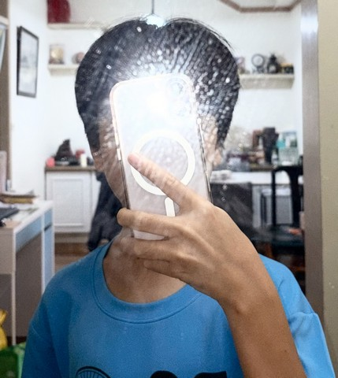
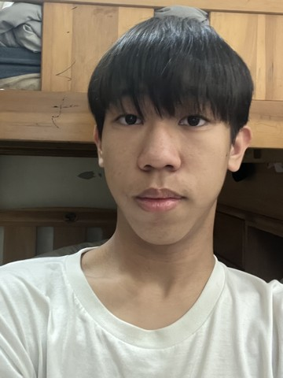
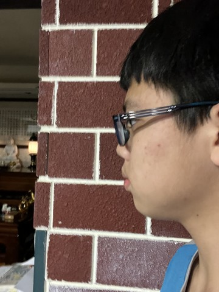
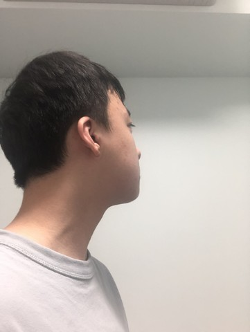
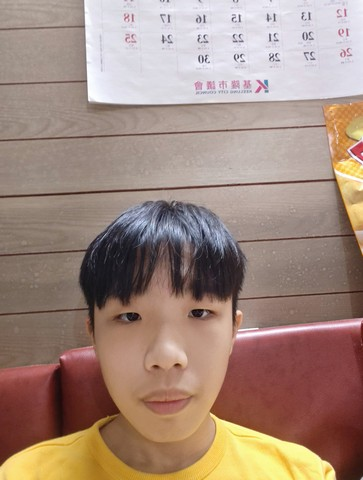
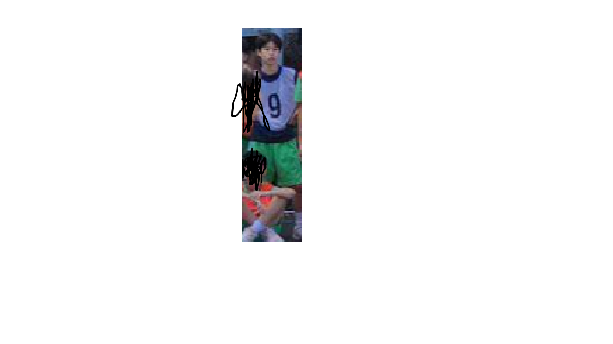

我的英文不太好所以常常為此而傷腦筋,補習之後應該有好一點吧？

我在家中排行老二我有一個哥哥和一個妹妹

興趣是打羽球及桌球，喜歡待在家睡覺。

不喜歡獨自一個人做很多事 喜歡有點熱鬧 但不至於會到很躁 嘻嘻∼

我喜歡在學校的生活，因為可以跟同學打鬧互動玩耍。

我平常喜歡打羽球還有打遊戲跟睡覺，我不擅長唱歌、畫畫還有跳舞

喜歡運動與閱讀，平時努力學習，也樂於幫助同學

對我而言，閱讀能讓我沉浸在文字的想像空間，豐富內心的感受；聽音樂則能緩解日常的壓力，讓我保持心情愉悅。
而拉小提琴更是一項我非常投入的愛好，透過指尖與琴弦的律動，我能親自演繹出動人的旋律，
在不斷練習的過程中，我學會了專注與耐心，也更深刻地體會到音樂的魅力。

基隆市仁愛區，
我家樓下有一個籃球場這也是我喜歡籃球的其中一個原因，
我最擅長的科目是數學。

喜歡打遊戲，也希望每天都能過得充實又開心。

我對自然化學類的東西有很大的興趣，是一位很普通的學生。

我的名字叫顏培宸,就讀銘傳國中805班，我喜歡閱讀.

大家好，我是林宥丞。平常喜歡打籃球，也很喜歡認識新朋友。
個性開朗活潑，希望能和大家一起相處愉快、一起進步成長！
個性開朗活潑，希望能和大家一起相處愉快、一起進步成長！

我是這班的新同學我原本的學校是時雨
